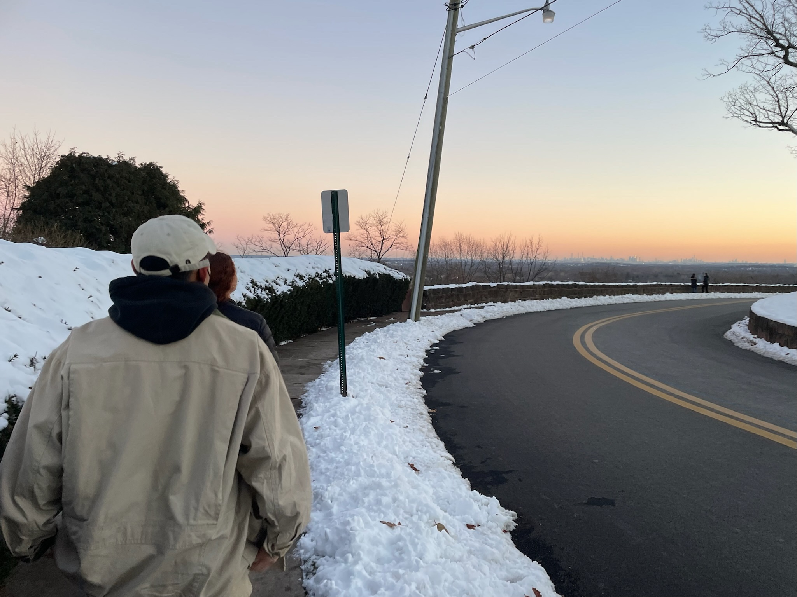

Welcome to my corner. In this season of my life, this is a space for me to share my journey through life and faith. This is a space to put my revelations that connect my heart, mind, and spirit; to put journal entries, drawings, everyday life, etc. This is a space for me to be vulnerable and to process things in a world where vulnerability isn't popular. This is my space to grow. Welcome and hello.
welcome & hello
